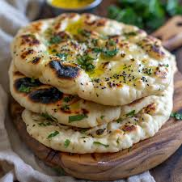

Naan

Description
Naan is a popular soft, leavened flatbread from South Asia, typically baked in a tandoor (clay oven). It pairs perfectly with curries and gravies, making it a staple in many dishes. Naan can be enjoyed plain or flavored with garlic or herbs.
Ingredients
- 2 cups all-purpose flour
- 1/2 teaspoon yeast
- 1/2 cup warm water
Steps
- Mix the yeast in warm water and let it sit for 10 minutes.
- Combine the flour, yeast mixture, and a pinch of salt to form a dough.
- Knead the dough, let it rise for an hour, then roll it into flat circles and cook on a hot griddle.